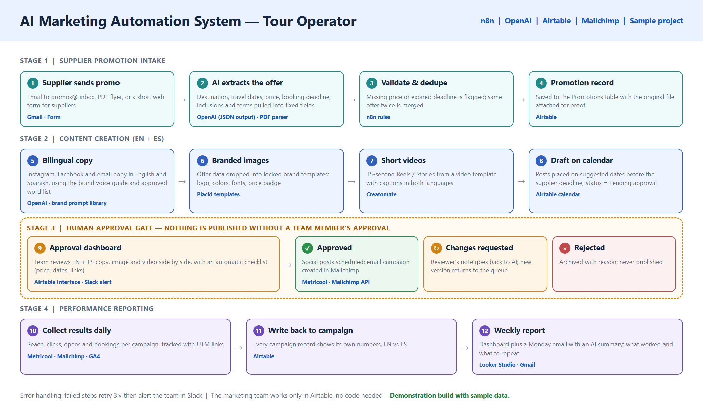
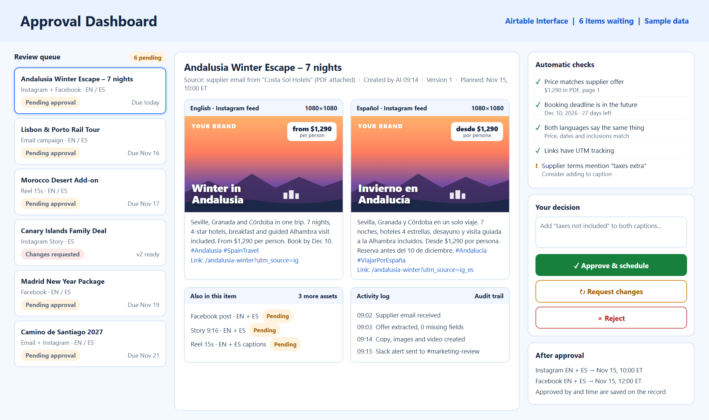
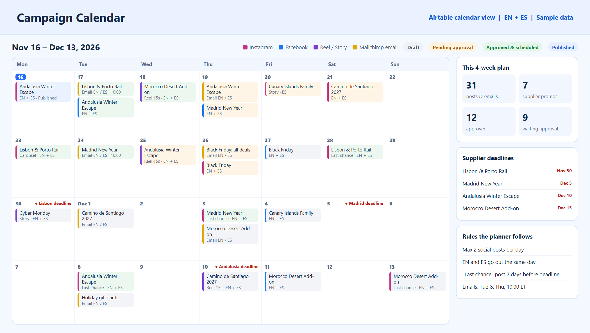
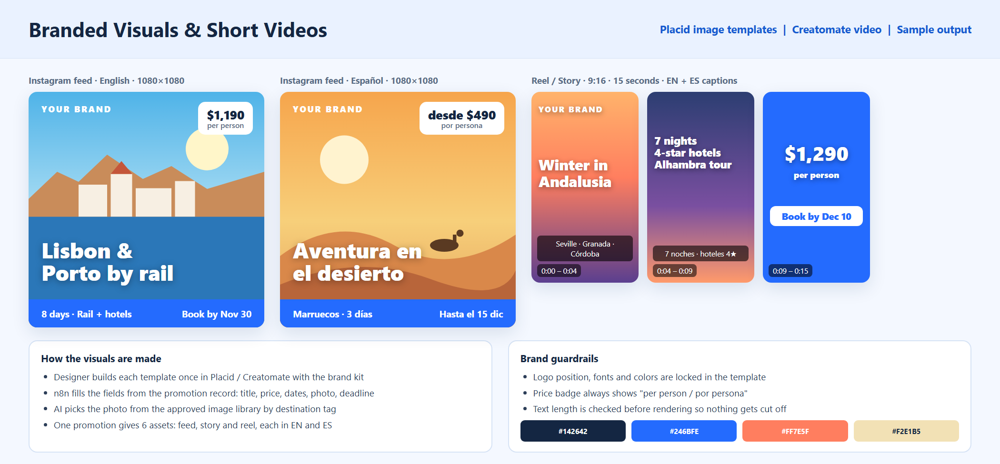
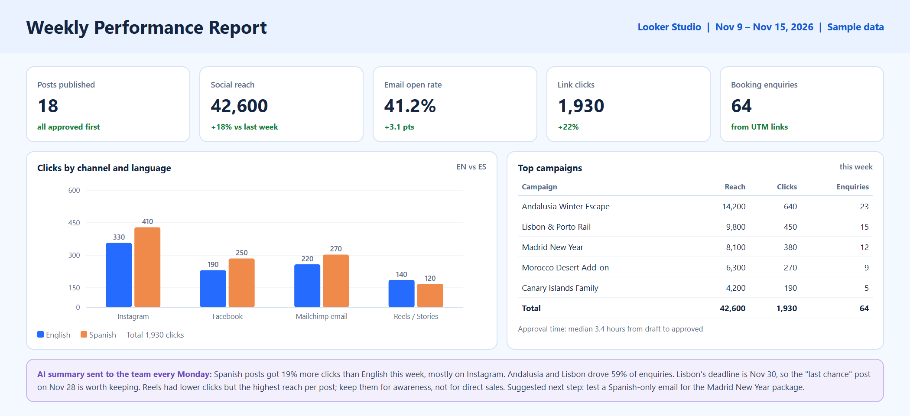
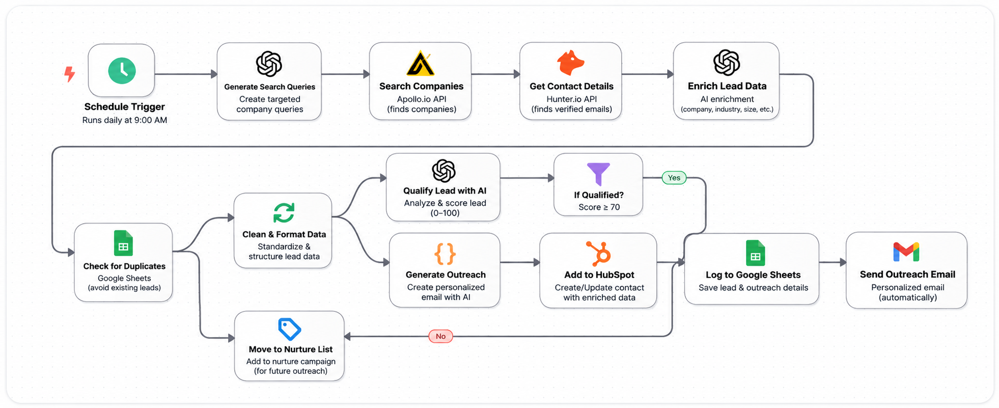
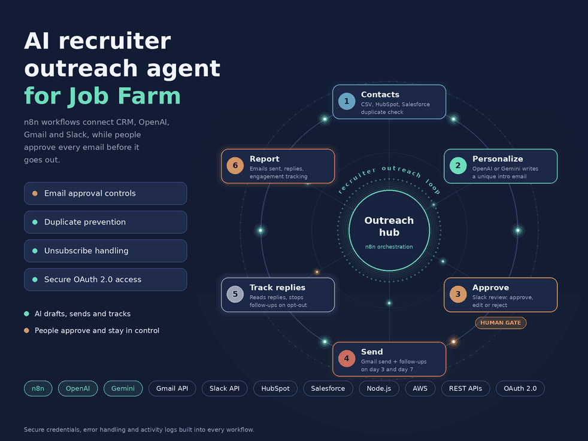
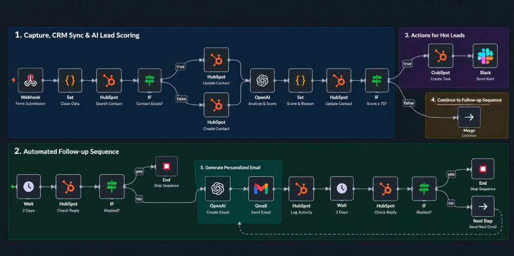

The full system in four stages, with the human approval gate in the middle.
Approval dashboard: both languages side by side, automatic checks and the approve, change or reject decision.
Campaign calendar planned around supplier booking deadlines.
Branded images and a 15-second video generated from templates.
Weekly performance report with an AI summary for the team.The challenge
A tour operator gets promotions from many suppliers by email and PDF. The marketing team was retyping every offer, writing each post twice (English and Spanish), making graphics by hand and scheduling everything manually. Offers were sometimes promoted after the booking deadline, prices were copied wrong, and nobody had a clear view of which campaigns actually brought enquiries.
The team wanted a reliable, low-cost system that non-technical staff could run, with one firm rule: AI can prepare and schedule content, but nothing is published until a person approves it.
The solution
I designed a turnkey system in n8n with Airtable as the team's workspace. It turns each supplier promotion into a complete bilingual campaign: copy, branded images, a short video and an email, placed on a calendar before the supplier's deadline. A team member reviews and approves each item in a simple dashboard, and only approved content is scheduled. Results come back automatically into a weekly report.
How it works
- Supplier intakePromotions arrive by email, PDF flyer or a short supplier form, and n8n picks them up automatically.
- AI extractionOpenAI pulls the destination, travel dates, price, booking deadline, inclusions and terms into fixed fields. Missing data or an expired deadline is flagged, and duplicate offers are merged.
- Bilingual copyInstagram, Facebook and email copy is written in English and Spanish together, using a brand voice guide, so both versions say the same thing.
- Branded visualsOffer data fills locked Placid image templates and Creatomate 15-second video templates: feed post, story and reel in both languages.
- CalendarItems are placed on the campaign calendar with simple rules: at most two social posts a day, both languages on the same day, and a "last chance" post two days before the deadline.
- Human approvalThe team gets a Slack alert and reviews each item in the approval dashboard, with automatic checks that the price matches the supplier PDF, the deadline is in the future and links have tracking. They approve, request changes with a note the AI uses to revise, or reject.
- PublishApproved social posts are scheduled in Metricool, and approved emails are created and scheduled in Mailchimp. Who approved and when is saved on the record.
- ReportReach, clicks, opens and enquiries are pulled daily, written back to each campaign and shown in a Looker Studio report, with a Monday email summary written by AI.
Key features
- Automatic supplier promotion intake from email and PDF
- English and Spanish content for social and email
- Branded images and short videos from locked templates
- Campaign calendar built around supplier deadlines
- Mandatory human approval before anything is published
- Automatic checks on price, dates and tracking links
- Mailchimp campaigns and social scheduling
- Weekly performance report with an AI summary
- Retries and Slack alerts when a step fails, plus a full activity log
Delivery plan
- Paid proof of concept (about 2 weeks): one supplier, from incoming email to an approved, scheduled bilingual post
- Full build (about 4 to 6 weeks): all channels, videos, Mailchimp, calendar rules and reporting
- Handover: short video guides and a one-page checklist so the team can run it without a developer
- Ongoing support: optional monthly plan for monitoring, template updates and new features
Running cost
Estimated at about $150 to $300 per month for the software (n8n, OpenAI, Airtable, Placid, Creatomate, Metricool and Mailchimp). The biggest variables are the Mailchimp contact list size and how many videos are rendered each month. Looker Studio is free.
Results
- Supplier offers become ready-to-review campaigns in minutes instead of hours
- Consistent branding and matching content in both languages
- Price and deadline checks before any offer is approved
- Full control: the team approves every post and email
- A clear weekly view of which campaigns and languages bring enquiries
Demonstration build with sample data.
Other projects

A daily n8n pipeline that finds, verifies, scores and syncs B2B leads to HubSpot with personalized outreach.

An n8n agent that writes personalized recruiter emails, gets human approval in Slack and handles follow-ups.

Captures leads, scores them with AI, alerts sales on hot leads and runs follow-ups that stop on reply.